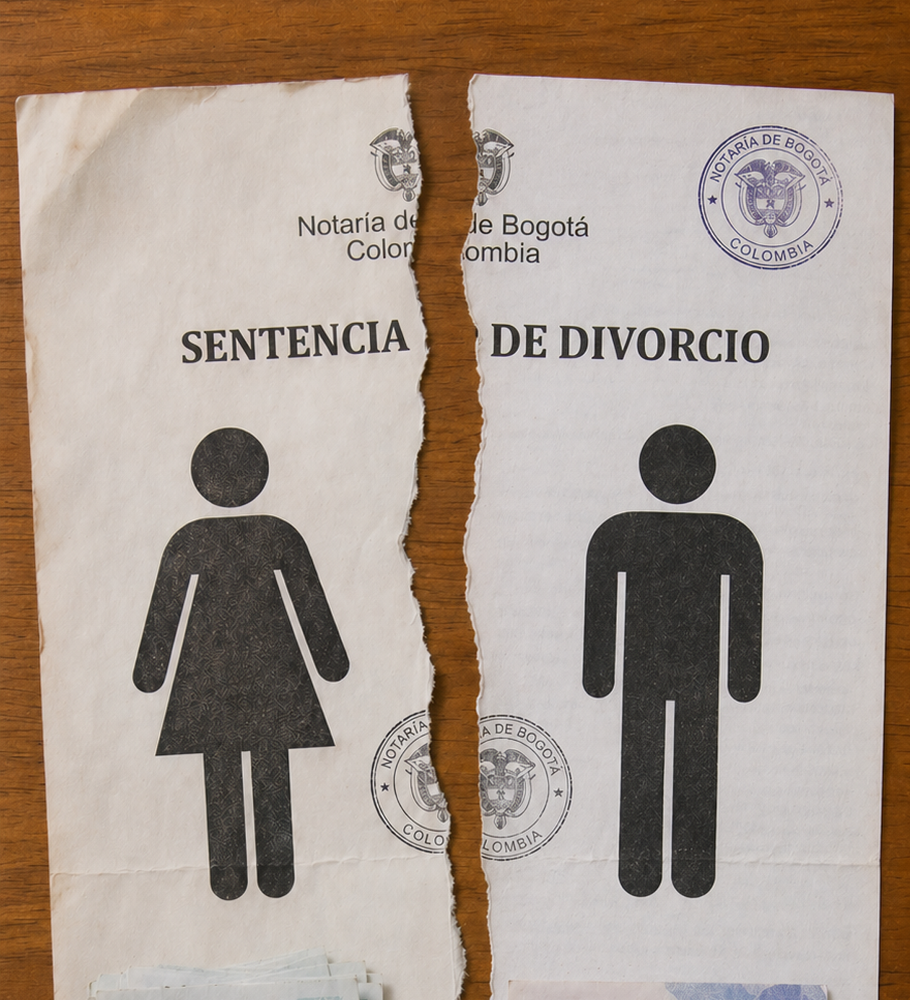

01 / Comprenda su situación
¿Qué opciones existen para divorciarse en Colombia?

En Colombia existen distintas rutas para terminar un matrimonio o hacer cesar los efectos civiles de un matrimonio religioso. El trámite depende de si los cónyuges están de acuerdo, de la clase de matrimonio, de sus hijos y de las circunstancias jurídicas particulares.
El divorcio notarial se tramita por mutuo acuerdo a través de abogado y se formaliza mediante escritura pública. Cuando no existe acuerdo, puede ser necesario acudir ante el juez. La Ley 2442 de 2024 incorporó la sola voluntad de cualquiera de los cónyuges como causal de divorcio, con un procedimiento y consecuencias que deben revisarse según el caso.
Es importante no confundir separación de hecho, divorcio, disolución de la sociedad conyugal y liquidación del patrimonio. Son asuntos relacionados, pero no equivalentes.
Importante: Esta guía es informativa y no reemplaza una revisión individual de documentos. La vía apropiada y los plazos dependen del caso; no se garantiza un resultado.
02 / Encuentre su caso
Situaciones frecuentes y asesoría jurídica
Estos son algunos de los problemas que pueden presentarse. Cada caso requiere revisar la legislación, los hechos y los documentos disponibles antes de elegir una estrategia.
Divorcio notarial de mutuo acuerdo
Cuando existe acuerdo entre cónyuges sobre divorciarse y se cumplen las exigencias legales, puede tramitarse ante notario por medio de abogado. Si hay hijos menores, deben atenderse los acuerdos y actuaciones de protección previstos para sus derechos.
¿Cómo podemos ayudar? Preparamos la revisión documental, el acuerdo, la solicitud y el acompañamiento según el trámite contratado.
Divorcio judicial cuando no hay acuerdo
Si uno de los cónyuges no acepta el divorcio o hay controversias sobre aspectos relevantes, se evalúa la vía judicial. La estrategia depende de los hechos, las pretensiones, la prueba y las normas vigentes.
¿Cómo podemos ayudar? Analizamos el escenario y sus consecuencias patrimoniales y familiares antes de orientar sobre una demanda o contestación.
Divorcio unilateral bajo la Ley 2442 de 2024
La ley incorporó la causal de sola voluntad de cualquiera de los cónyuges (numeral 10 del artículo 154 del Código Civil). Esta novedad no significa que pueda formalizarse unilateralmente una escritura de divorcio ante notario: la ruta notarial sigue vinculada al acuerdo en los términos legales.
¿Cómo podemos ayudar? Revisamos la procedencia judicial, la propuesta de efectos del divorcio y la defensa de derechos de las personas involucradas.
Separación de bienes y sociedad conyugal
La finalización del vínculo y el reparto del patrimonio no son exactamente el mismo acto. Deben identificarse activos, pasivos, deudas, bienes propios y sociales, además de capitulaciones u otras circunstancias especiales.
¿Cómo podemos ayudar? Ayudamos a organizar inventarios, verificar documentos de propiedad y evaluar acuerdos de liquidación.
Custodia, cuidado personal y visitas
Las decisiones sobre hijos deben atender su interés superior y sus derechos, no utilizarse como moneda de cambio. Los acuerdos deben especificar responsabilidades, tiempos y mecanismos de comunicación adecuados.
¿Cómo podemos ayudar? Orientamos en la preparación de propuestas y la revisión de medidas de cuidado, contacto y protección.
Cuotas alimentarias y gastos de los hijos
Los alimentos comprenden más que comida: pueden involucrar vivienda, salud, educación y otros rubros necesarios. Su definición debe considerar las necesidades del menor y las capacidades económicas, conforme a las normas aplicables.
¿Cómo podemos ayudar? Revisamos gastos, ingresos, soportes y alternativas de acuerdo o trámite ante autoridad competente.
Divorcio con vivienda, apartamento o créditos
Una propiedad con hipoteca, una vivienda familiar o un inmueble a nombre de una sola persona requiere estudio: titularidad y carácter social no siempre coinciden. También pueden existir obligaciones con terceros y afectaciones legales.
¿Cómo podemos ayudar? Cruzamos documentos de inmueble, deudas, fechas de adquisición y situación matrimonial para orientar la liquidación.
Matrimonio religioso, unión marital de hecho y separación
El matrimonio religioso con efectos civiles, el matrimonio civil y la unión marital de hecho tienen particularidades. El divorcio no es el trámite adecuado para todas las parejas: en algunas situaciones se estudia la terminación y liquidación de una sociedad patrimonial.
¿Cómo podemos ayudar? Identificamos la naturaleza del vínculo y el procedimiento aplicable antes de preparar documentos.
Colombianos en el exterior y poderes
Puede haber alternativas de representación mediante poder, pero las formalidades dependen del acto, lugar de otorgamiento y autoridad que conoce el trámite. Casos con matrimonios o sentencias extranjeras requieren análisis adicional.
¿Cómo podemos ayudar? Orientamos sobre requisitos documentales y la viabilidad de actuar desde el exterior.
Medidas urgentes y protección
Cuando hay amenazas, violencia intrafamiliar o riesgos para niños y adolescentes, la prioridad son los mecanismos de protección ante las autoridades competentes. La consulta de divorcio no reemplaza una atención de emergencia.
¿Cómo podemos ayudar? Señalamos la importancia de acudir a comisarías de familia, Fiscalía o canales de emergencia según el riesgo.
03 / Prepare su consulta
¿Qué documentos conviene reunir?
No es necesario tener todo listo para escribirnos. Si dispone de estos documentos, permiten entender con mayor rapidez los antecedentes y definir qué faltaría por conseguir.
Lista orientativa de documentos según su consulta| Situación | Documentación útil |
|---|
| Para empezar un divorcio | Registro civil de matrimonio, identificación de los cónyuges, información sobre hijos y datos de contacto. |
| Si tienen hijos menores | Registros civiles, gastos de sostenimiento, información escolar y de salud y acuerdos existentes. |
| Si hay bienes o deudas | Certificados de tradición, escrituras, documentos de vehículos, créditos, extractos y soportes de obligaciones. |
| Si ya existe un proceso | Demanda, notificaciones, actas de conciliación, decisiones y constancias de fechas. |
No publique información personal, expedientes ni datos de menores en comentarios públicos. Consulte primero cómo remitir la documentación de forma adecuada.
04 / Cómo trabajamos
Del diagnóstico a una estrategia clara
- Conocemos el problema. Usted describe los hechos, las personas involucradas y las fechas importantes.
- Estudiamos la documentación. Identificamos qué puede comprobarse, qué información falta y si existen plazos urgentes.
- Explicamos las opciones. Se analizan alternativas extrajudiciales, administrativas, notariales o judiciales según el caso.
- Definimos el encargo. Antes de iniciar gestiones se acuerdan alcance, honorarios y condiciones de representación.
- Hacemos seguimiento. Si se contrata el acompañamiento, informamos sobre actuaciones relevantes y próximos pasos.
Consultar mi situación
05 / Tome decisiones informadas
Honorarios, costos y duración
El valor del servicio depende de la cantidad de documentos, complejidad, posibilidad de acuerdo, necesidad de pruebas y actuaciones requeridas. Por eso no ofrecemos una cifra universal ni prometemos tiempos de decisión por parte de juzgados o entidades.
Honorarios profesionales
Se determinan según el diagnóstico y el trabajo contratado. Solicite siempre claridad sobre lo que está incluido.
Gastos adicionales
Según el caso, pueden existir derechos notariales o registrales, certificados, peritajes, desplazamientos u otros gastos. No todos aplican.
Si tiene una notificación, demanda, audiencia o vencimiento próximo, comuníquelo desde el primer contacto: podría ser relevante para preservar sus opciones.
06 / Dudas habituales
Preguntas frecuentes sobre separación y divorcio
¿Puedo divorciarme si mi pareja no quiere?
La Ley 2442 de 2024 incorporó el divorcio por sola voluntad de cualquiera de los cónyuges. Debe estudiarse el procedimiento judicial y sus efectos.
¿El divorcio unilateral puede hacerse directamente en una notaría?
La vía notarial está prevista para el mutuo acuerdo. La Ley 2442 permite continuar ante notario si las partes deciden tramitarlo por acuerdo conforme a sus reglas.
¿Necesitamos abogado para el divorcio notarial?
Sí. El Decreto 4436 de 2005 contempla la solicitud por intermedio de abogado.
¿Se puede divorciar una pareja con hijos menores?
Sí. Deben protegerse sus derechos y atenderse los procedimientos relacionados con custodia, visitas y alimentos.
¿Divorciarnos divide automáticamente el apartamento?
No necesariamente. La disolución y la liquidación de la sociedad conyugal son etapas jurídicas distintas.
¿La custodia siempre la obtiene la madre?
No existe una respuesta automática basada únicamente en el sexo del progenitor; se priorizan los derechos y el interés superior del menor.
¿Puedo vivir separado sin divorciarme?
Sí, pero la separación de hecho no equivale a terminar formalmente el matrimonio ni resuelve por sí sola todos los efectos patrimoniales.
¿Cuánto cuesta un divorcio en Neiva?
Depende del acuerdo, bienes, hijos, gastos notariales o judiciales y honorarios. Se precisa con una evaluación inicial.
¿Qué hago si mi pareja está en el exterior?
Se debe verificar la documentación, las formalidades de poderes y la autoridad competente para tramitar el caso.
¿Se puede conciliar lo relacionado con nuestros hijos?
En muchos asuntos de familia la conciliación es útil o necesaria bajo las reglas aplicables, siempre respetando los derechos de los menores.
¿Qué ocurre si hay violencia o amenazas?
Acuda a los mecanismos de protección correspondientes y a la línea de emergencias en riesgo inmediato; no espere a resolver el divorcio.
07 / Asesoría relacionada
Explore otras áreas de práctica
Una misma situación puede involucrar varias áreas del derecho. Consulte otras guías para comprender qué asesoría podría necesitar.